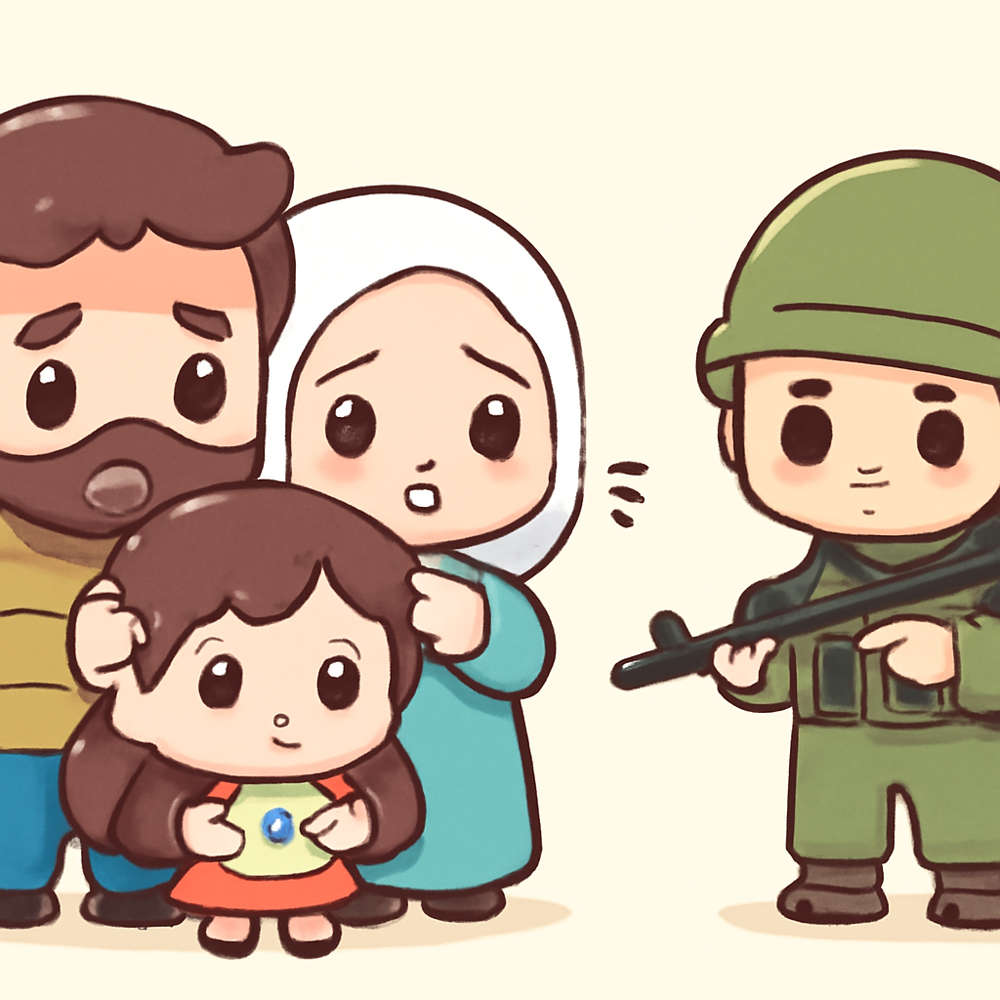
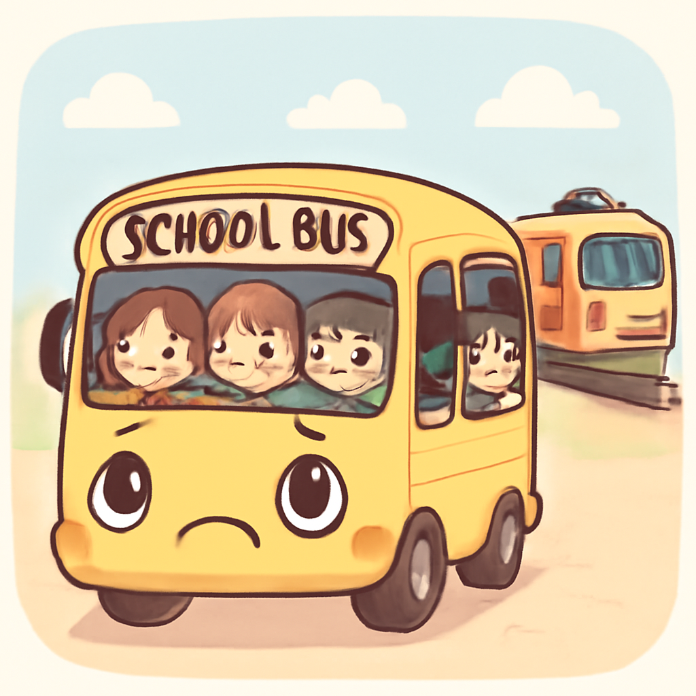

其一 · 伊朗德黑蘭 · 美軍空襲遭譴責
伊朗強烈譴責美國空襲，稱違反停火協議。
在德黑蘭，伊朗譴責美軍的空襲行為，稱其為對停火協議的嚴重違反，正值伊朗與卡塔爾的和平談判進行中。這次事件不僅影響兩國關係，也可能影響更廣泛的中東局勢。希望這場衝突不會讓他們的和平夢想成為遙不可及的泡影。
🔗 原始新聞 ↗
2026-05-27 · 以古觀今，以笑抗愁
伊朗強烈譴責美國空襲，稱違反停火協議。
在德黑蘭，伊朗譴責美軍的空襲行為，稱其為對停火協議的嚴重違反，正值伊朗與卡塔爾的和平談判進行中。這次事件不僅影響兩國關係，也可能影響更廣泛的中東局勢。希望這場衝突不會讓他們的和平夢想成為遙不可及的泡影。
🔗 原始新聞 ↗
基輔面臨俄軍加強空襲威脅，情勢緊張。
基輔最近遭遇了戰爭以來最猛烈的空襲，俄方警告將繼續加大攻擊力度，並要求外國公民撤離。這不僅讓當地民眾人心惶惶，也讓國際社會對局勢的發展充滿擔憂。希望基輔的居民能在這場風暴中找到庇護。
🔗 原始新聞 ↗
以色列加強空襲，黎巴嫩村莊遭重創。

在黎巴嫩，以色列針對真主黨的空襲造成11人喪生，其中包括無辜的平民。這次行動是以色列總理內塔尼亞胡誓言要徹底消滅真主黨的一部分。該事件再度凸顯了中東地區的緊張局勢，讓人不禁想問，何時才能迎來真正的和平？
🔗 原始新聞 ↗
加拿大與德國達成重要天然氣出口協議。
在加拿大，政府宣布與德國簽署了一項重要的液化天然氣出口協議，這對兩國而言意義重大。加拿大希望開拓新市場，而德國則急需多元化其能源供應。這筆交易將可能改變歐洲的能源格局，讓人期待未來的合作會有更多火花。
🔗 原始新聞 ↗
比利時校車與火車相撞，造成悲劇事故。

在比利時，一輛校車與火車相撞，造成包括兩名學生在內的四人喪生。這起事故引發了社會對校車安全的廣泛關注，尤其是在學校附近的交通安全問題。希望未來能有更有效的措施保障孩子們的安全。
🔗 原始新聞 ↗